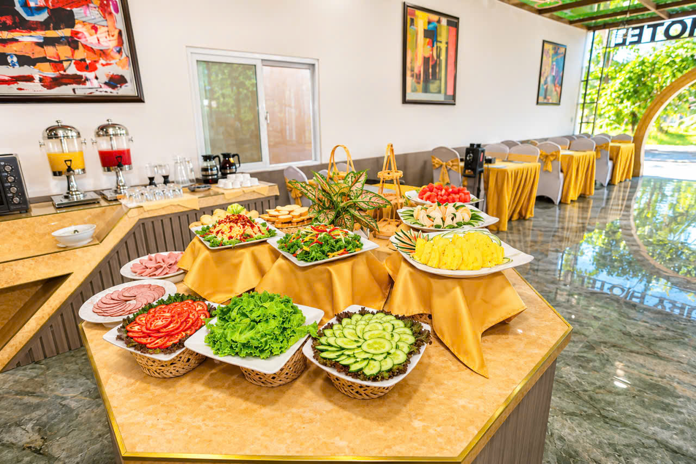

Tiếng Việt
Tiếng Việt English
English 한국어
한국어 中文
中文 Русский
Русский Deutsch
Deutsch
Говорят, чтобы понять место, начните с трапезы. Хойан – лучшее тому доказательство. Когда-то оживлённый торговый порт, куда приезжали японские, китайские и европейские купцы, Хойан сохранил в своей кухне следы культурного обмена длиной в сотни лет. В этой статье мы расскажем о десяти блюдах, которые стоит попробовать, о том, как есть их по-местному, и о гастрономических впечатлениях прямо в CGP Luxury Hotel.
Чем особенна кухня Хойана?
Кухня Хойана не вычурна, но изысканна до мелочей. Её неповторимый вкус создают три вещи: местные продукты, смешение культур и привычка есть всё со свежей зеленью.
Зелень из Чакуэ
Зелень из деревни Чакуэ удобряют водорослями из лагуны, поэтому у неё насыщенный аромат и особая сладость. Почти каждое блюдо Хойана подают со свежей зеленью.
Смешение культур
Лапша као лау, «белые розы» и вонтоны несут отпечаток иностранных купцов, живших когда-то в старом порту.
Семейные рецепты
Многие известные заведения хранят рецепты, передаваемые из поколения в поколение, готовят по старинке и работают лишь в определённые часы.
Доступные цены
Большинство уличных блюд стоят очень недорого, поэтому за день можно попробовать многое.
10 блюд, которые стоит попробовать
1. Као лау
Если в Хойане можно попробовать только одно блюдо, выбирайте као лау. Золотисто-коричневая лапша упругая и слегка хрустящая, её делают по традиции на колодезной воде с древесной золой. В миске као лау – лапша, тонко нарезанная свинина чар сиу, хрустящие шкварки, бланшированные ростки фасоли, зелень из Чакуэ и немного густого соуса. В отличие от супа, бульона здесь совсем мало: перед едой всё нужно перемешать.
 Фото: Chainwit. / Wikimedia Commons, CC BY 4.0
Фото: Chainwit. / Wikimedia Commons, CC BY 4.0 Фото: Christophe95 / Wikimedia Commons, CC BY-SA 4.0
Фото: Christophe95 / Wikimedia Commons, CC BY-SA 4.02. Курица с рисом по-хойански
Курица с рисом в Хойане отличается от той, что готовят в других местах. Рис золотистый, потому что его варят на курином бульоне с куркумой, он рассыпчатый и ароматный. Домашнюю курицу отваривают в самый раз, разбирают на волокна и смешивают с луком, вьетнамской кинзой и приправами. Подают с маринованными овощами, бульоном и капелькой чили-пасты. Это блюдо есть и в меню ресторана CGP, так что попробовать его можно прямо в отеле.

3. Ми куанг
Ми куанг – визитная карточка всего региона Куанг. Широкую плоскую лапшу белого или жёлтого цвета заливают небольшим количеством насыщенного бульона из креветок, свинины, курицы или змееголова. Блюдо посыпают жареным арахисом и едят с раскрошенными рисовыми крекерами и свежей зеленью. Бульона в ми куанг ровно столько, чтобы пропитать лапшу.
 Фото: Chainwit. / Wikimedia Commons, CC BY 4.0
Фото: Chainwit. / Wikimedia Commons, CC BY 4.0
4. Бань ми
Хойанский бань ми знаменит на весь мир: хрустящая корочка, мягкий мякиш и щедрая начинка – паштет, ветчина, жареная свинина, яйцо, зелень и фирменный соус каждой лавки. У некоторых лавок в Старом городе всегда длинная очередь туристов. Попробуйте хотя бы раз и не стесняйтесь спросить продавца об особой начинке.
 Фото: Chainwit. / Wikimedia Commons, CC BY 4.0
Фото: Chainwit. / Wikimedia Commons, CC BY 4.0
5. «Белые розы»
Эти пельмешки из прозрачного рисового теста с начинкой из креветок или свинины складывают в форме маленького цветка. Их готовят на пару, посыпают хрустящим жареным луком-шалотом и макают в кисло-сладкий рыбный соус. Лёгкое и изящное блюдо, отлично подходит для обеда.
 Фото: Chainwit. / Wikimedia Commons, CC BY 4.0
Фото: Chainwit. / Wikimedia Commons, CC BY 4.0
6. Вонтоны
Вонтоны в Хойане бывают двух видов: в бульоне и жареные. Хрустящие жареные вонтоны поливают кисло-сладким соусом с креветками, свининой и овощами. Это очень популярная вечерняя закуска.
7. Бань сео и рулетики в горчичных листьях
Бань сео центрального Вьетнама меньше южных, с хрустящей оболочкой и начинкой из креветок, свинины и ростков фасоли. Заверните их в рисовую бумагу со свежей зеленью и обмакните в густой арахисовый соус. Рам куон кай – маленькие спринг-роллы, завёрнутые в зелёные листья горчицы, их макают в кисло-сладкий рыбный соус.
8. Кукурузный десерт Кам Нам
Кукуруза из деревни Кам Нам сладкая и клейкая, из неё варят десерт с густым кокосовым молоком. Пиала прохладного кукурузного десерта вечером у реки Хоай – настоящее хойанское впечатление.
9. Жареная телятина Кау Монг
Золотистую жареную телятину тонко нарезают и заворачивают в рисовую бумагу со свежей зеленью, зелёным бананом и карамболой, затем макают в анчоусный или соевый соус. Её часто едят за дружеским столом или в обед.
10. Нуок мот и травяные напитки
В Старом городе вы увидите много лотков с нуок мот – прохладным травяным напитком из листьев лайма, лемонграсса, корицы и фруктов. Это идеальный способ утолить жажду после долгой прогулки под солнцем.
Где и когда есть?
У хойанской кухни свой ритм в течение дня. Зная, что и когда есть, вы получите самые вкусные трапезы.
- Раннее утро
Ми куанг, бань ми, кофе
Многие заведения с ми куанг и бань ми открываются рано утром. Если вы живёте в CGP, завтрака в отеле вполне достаточно, но бань ми по дороге на велопрогулке – тоже большое удовольствие.
- Обед
Курица с рисом, као лау, «белые розы»
В это время в заведениях с курицей и као лау больше всего посетителей. Приходите чуть раньше, чтобы не ждать.
- После обеда
Десерты, нуок мот, сладости
Днём время перекусов: кукурузный или бобовый десерт, бань ит ла гай или стакан холодного нуок мот.
- Вечер
Ночной рынок и кафе у реки
Вечером тележки с закусками выстраиваются вдоль реки и на ночном рынке. Попробуйте жареную рисовую бумагу, жареные вонтоны и морепродукты на гриле.
 Фото: Alexkom000 / Wikimedia Commons, CC BY 4.0
Фото: Alexkom000 / Wikimedia Commons, CC BY 4.0Гастрономия в CGP Luxury Hotel
После дня уличной еды иногда хочется просто вкусно, чисто и спокойно поесть в отеле. CGP Luxury Hotel предлагает множество способов насладиться вьетнамскими вкусами, никуда не выходя.
Плавающий завтрак у бассейна
Плетёный поднос с выпечкой, свежими фруктами и арбузным соком подают прямо на воду бассейна. Это любимое впечатление пар и потрясающий фон для фотографий. Пожалуйста, закажите его на ресепшен минимум за день, чтобы кухня успела подготовиться.


Шведский стол в ресторане
Ресторан отеля расположен на первом этаже: зелёный потолок, жёлтые плетёные стулья и яркие картины маслом. Каждое утро на шведском столе тосты, яйца, сосиски, мясная нарезка, свежие овощи, сезонные фрукты – арбуз, питайя, манго, а также апельсиновый и арбузный сок, кофе и чай. Если хотите завтракать по системе шведского стола, сообщите на ресепшен при бронировании или заселении.
Вьетнамская и европейская кухня
Кухня CGP готовит и вьетнамские, и европейские блюда, которые подают у бассейна или в ресторане: золотистую курицу с рисом по-хойански, поднос рисовой лапши со свежей зеленью и насыщенным соусом, хрустящие жареные пирожки, горячий багет с яичницей и сэндвичи с картофелем фри для лёгкого перекуса. Меню можно адаптировать под ваш вкус или диету, просто скажите об этом при заказе.


Садовое кафе
Под зелёной перголой у бассейна садовое кафе предлагает вьетнамский кофе, апельсиновый и арбузный сок, фруктовый чай и лёгкие закуски. Здесь приятно почитать днём или поболтать с друзьями.
Советы путешественникам
Уточняйте цену перед заказомТам, где нет чёткого прайса, сначала спросите цену, чтобы избежать недоразумений. Большинство продавцов в Хойане очень дружелюбны и охотно всё объяснят.
Пробуйте многое понемногуУличная еда недорогая, поэтому закажите несколько небольших блюд и поделитесь со спутником. Так вы попробуете больше вкусов за одну поездку.
Осторожно с аллергиейВо многих блюдах есть арахис, креветки или рыбный соус. Если у вас аллергия, предупредите продавца или попросите ресепшен написать для вас карточку на вьетнамском языке.
Не знаете, с чего начать? Спросите на ресепшен CGP. Наша команда – местные жители, которые знают хорошие места, куда ходят сами хойанцы, и с радостью отметят их на вашей карте.
Частые вопросы
Чем као лау отличается от ми куанг?
У као лау упругая золотисто-коричневая лапша со свининой чар сиу и шкварками, бульона очень мало. У ми куанг широкая плоская лапша, бульона больше, подают с арахисом и жареными рисовыми крекерами.
Есть ли в отеле вегетарианские блюда?
Да. Кухня CGP может адаптировать блюда для вегетарианцев или под особые пожелания. Сообщите об этом при заказе.
За сколько нужно заказать плавающий завтрак?
Пожалуйста, закажите его на ресепшен минимум за день.
Включено ли питание в пакеты проживания?
Во все пакеты включён ежедневный завтрак. В зависимости от пакета могут быть включены ужин или послеобеденный чай, подробности на странице каждого пакета.
Почувствуйте вкус Хойана
В CGP Luxury Hotel можно наслаждаться плавающим завтраком у бассейна и при этом быть в нескольких минутах езды на велосипеде от лучших заведений Старого города.